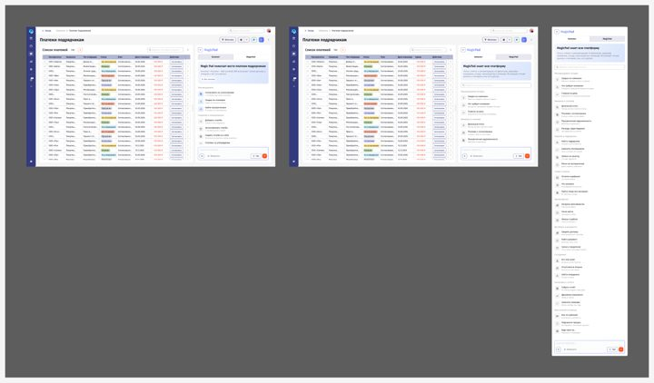
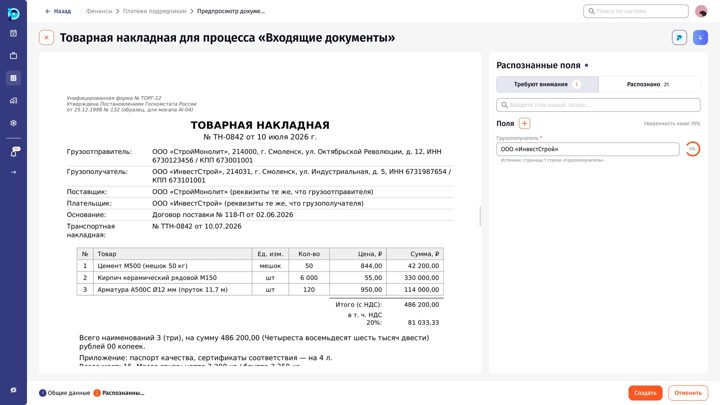
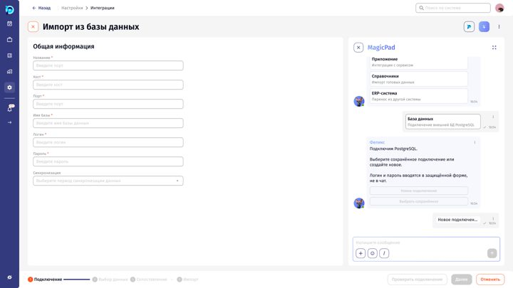
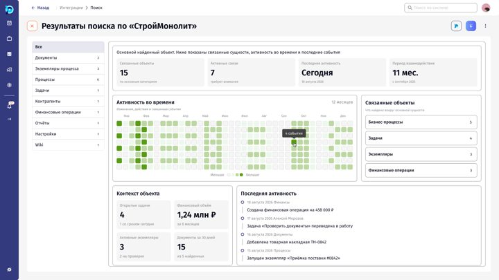
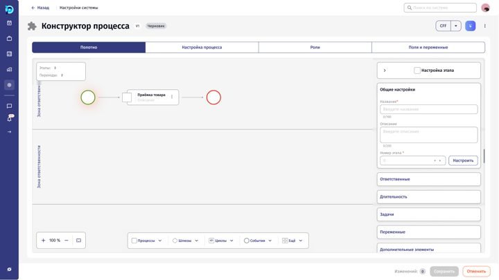
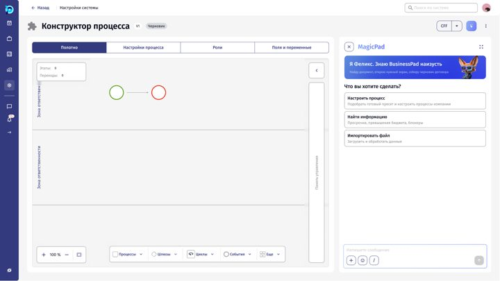
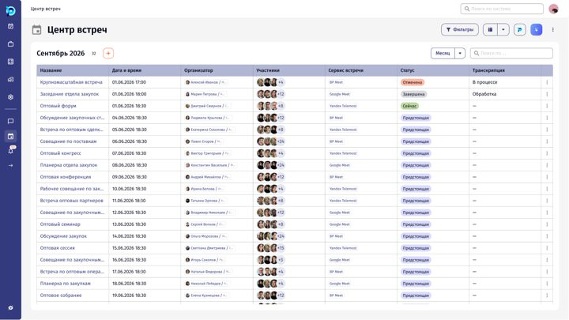
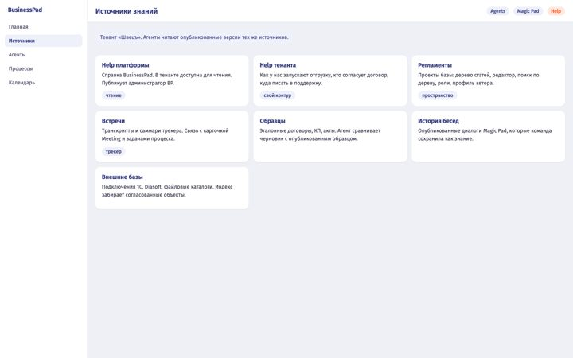

Прототипы BP3 и AI

Точки входа ИИ и MagicPad
Где пользователь встречает ИИ в BP3: копилот, MagicPad, маскот, inline-подсказки и окно ИИ-чата.

Документооборот / Импорт
Импорт входящего документа через MagicPad: загрузка, распознавание полей, выбор процесса и создание экземпляров (экраны U1–U9).

ИИ Интегратор (V3)
Мастер подключения внешних источников данных с помощью ИИ, последняя версия макетов V3.

ИИ Поиск
Глобальный ИИ-поиск: открытие, подсказки, выпадающие результаты и вкладки по типам объектов.

ИИ на этапе / Data flow
ИИ-агент на этапе бизнес-процесса: конструктор процесса, роли, добавление агента и инструкции.

Настройщик бизнес-процессов
Настройка бизнес-процессов через MagicPad: описание бизнеса, подбор пресета, публикация и правка процесса.

Task tracker и встречи
Трекер задач и встреч: табличный вид, календарь, детали встречи, создание и редактирование встречи.

Wiki Hub (клиентская wiki W2)
Wiki Hub тенанта: источники, Help платформы и тенанта, регламенты-проекты, встречи, образцы, история бесед, внешние базы и агенты. Экраны собраны из HTML-макетов Алексея.
Как пользоваться
Каждый раздел открывается как прототип: слева список экранов, справа текущий экран, внизу кнопки «Назад» и «Далее». Там, где в Figma настроены переходы, под экраном появляются кнопки переходов, а на экранах с картинкой можно включить подсветку зон клика. Ссылка с номером экрана (например, #5) открывает портал сразу на нужном шаге.
Все экраны BP3 и AI выгружены из Figma (экспорт 19.10.2026) и кликабельны: зоны клика стоят на кнопках макета, переходы из prototype Figma сохранены, шаги обработки идут по таймеру. Где перехода нет, работает «Далее» по порядку списка. Раздел Wiki Hub собран целиком из HTML-макетов.
CPQ и Billing в портал намеренно не включены. Документы (ТЗ и agent spec) перечислены по названиям, сами файлы здесь не публикуются.